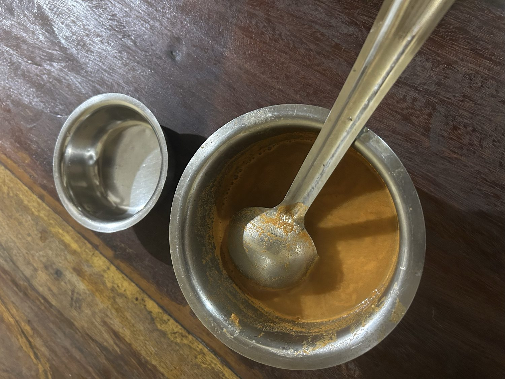
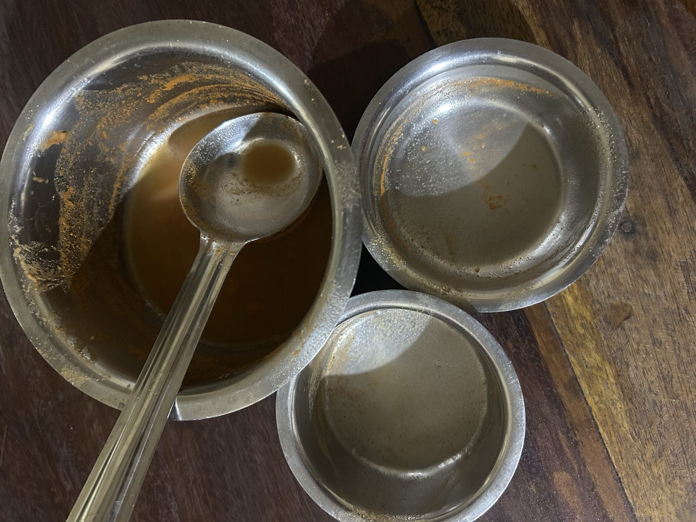

Aati: The Month With No Gods
Once a year, the Tulu calendar goes quiet. No weddings, no housewarmings, no temple festivals — for one whole month, the machinery of celebration simply stops. This is the story of Aati, and why a culture would build a hole into its own year on purpose.
Every calendar I know is a list of things to celebrate. Ours has a month that is the opposite — a month designed for not celebrating. It's called Aati, and if you grew up on this coast you know it less as a date than as a mood: grey, streaming, shut-in, lean. The month the year holds its breath.
Aati is the fourth month of the Tulu calendar, falling roughly across July and August, at the absolute depth of the monsoon.[8] And by long tradition it is an inauspicious month — "forbidden," people will say, only half-joking. No marriages. No housewarmings. No temple festivals. No buying of gold, land, or a new vehicle. None of the auspicious functions that fill the rest of the year happen in Aati.[2][1] For one month, the whole calendar of festivity is switched off.
As a kid I thought this was just superstition — the month you weren't allowed to do anything fun. It took me years to see it the other way around: that this might be one of the wisest things my ancestors ever encoded.
Why a month would be built empty
The honest reason isn't mystical. It's agricultural, and it's about hunger.
Aati is when the rain is heaviest and the land gives least. The old grain is running out, the new crop isn't in, the fields are flooded, and nothing can be harvested. Folklore scholars are blunt about it: this was historically a month of poverty, when farming families simply had little.[3] So the taboos make a hard kind of sense. You don't hold a lavish wedding in the month you can least afford one. You don't launch anything new when the world outside is water. The "inauspiciousness" is really an old, gentle law: this is the lean season — make do, don't overreach, wait.
A culture looked at the hardest month of its year and, instead of pretending it away, wrote it into the calendar. It named the scarcity and made room for it. That's not superstition. That's design.
The month that heals instead of celebrates
Here's the turn, though: Aati isn't empty. It just fills the space with something other than festivity. Where other months bring gods and feasts, Aati brings medicine.
There's a belief on this coast — and traditional healers hold it seriously — that during Aati the wild plants are at their most potent, their leaves and roots and tubers carrying the year's strongest medicine.[3] So the food of the month turns deliberately wild and bitter and foraged: the tender stem and flower of the banana plant, young bamboo shoots, forest greens and tubers that no one bothers with the rest of the year.[3] This is also the season of Patrode — colocasia leaves smeared with spiced batter, rolled, and steamed.[9] A whole cuisine of resourcefulness, built for a month when the pantry is bare and the forest is the pharmacy.
Aati Kalenja: the one spirit who comes
And in a month with no festivals, exactly one divine figure still walks the villages — Aati Kalenja.
Kalenja is a spirit believed to descend into the land only during Aati, precisely because this is the month disease breeds in the damp — to protect people from illness, bad omens, even the floods.[5] A single performer takes the spirit's form and goes house to house, dancing to a drum, sprinkling a mixture of water with charcoal, turmeric and tamarind — carrying protection from door to door.[5] It is quietly perfect: the one month the gods stay away, a lone spirit makes the rounds anyway, doing the unglamorous work of keeping a shut-in village well. It's also a disappearing tradition now — fewer performers each year, fewer doors that know to open.[6]
Aati Amavasya: the bitter morning
If Aati has a centre, it's a single new-moon morning: Aati Amavasya. This is the day the whole idea of the month — scarcity turned into medicine — becomes something you drink.

Before sunrise, before a single bite of food, you drink Paaleda kashaya: a bitter decoction made from the bark of the Paale tree — Alstonia scholaris, known as Saptaparni in Sanskrit and, tellingly, the "Devil's Tree" in English.[7] Traditionally the bark is pounded fresh on stone. You take at least a mouthful — it is genuinely bitter — and it's said that this one dose, once a year, keeps the stomach and the season's ailments at bay.[7] Folk medicine, yes; but Alstonia scholaris is a real medicinal tree, and the timing — a bitter, stomach-settling tonic taken at the peak of waterborne-disease season — is not an accident.
Then, the mercy. The bitterness is chased with Metteda Ganji (Menthe Ganji in Kannada) — a warm, soft gruel of rice, fenugreek and jaggery.[7] Bitter first, then warmth; medicine, then comfort. The whole philosophy of the month in two cups.

The long, slow indoors
The rest of Aati is just... weather. Rain that doesn't stop, roads that turn to river, a whole society pushed indoors. And so the month has its own small, housebound culture: old board games like Chennemane — the mancala game of seeds and hollows also known as Pallanguzhi — played across long grey afternoons while the monsoon does its work outside.[1] A month that even built its own way of passing time.
Why I still drink the bitter cup
I've spent my adult life building systems — the kind that are supposed to be resilient, that plan for the bad season before it arrives, that degrade gracefully instead of breaking. And every Aati I'm reminded that my ancestors were doing exactly that, centuries before the vocabulary existed, with nothing but a calendar and a habit.
They took the worst month of the year and, instead of denying it, engineered around it. They lowered the ambient expense of life exactly when people had least. They turned a season of sickness into a season of medicine. They sent a spirit to knock on doors when no one else would. They made rest and thrift and healing not a personal virtue you had to summon, but a default — baked into time itself so no one had to be wise alone.
Aati is the oldest systems thinking I know. A whole month designed as a graceful degradation — the year's own low-power mode.
So I still drink the bitter cup every year. Not because I fear the month, and not really for my stomach. I drink it because it's a once-a-year handshake with people I never met, who looked hardship in the eye and answered it with design instead of denial. That's an inheritance worth swallowing, bitterness and all.
And when Aati finally ends, the gods come back — the first of them the serpent, in the grove we never cut. That's the next story: Nagara Panchami: The Forest We Never Cut.
This piece is a companion to the broader Tulunad Heritage post — Aati was one thread there; here it gets the full month it deserves. If you know a detail I've missed, or your family keeps Aati differently, the contact links are open.
Sources & references
Cultural and medicinal claims are drawn from the following; where practice varies by family or community, I've kept it general. My own memories of Aati are mine and uncited.
- Mangalore Heritage — "Aati, a Month in the Tulu Calendar with Traditional Significance." (inauspicious month; foods; Chennemane games)
- Kannadiga World — "'Aati' — an 'inauspicious' month in Tulu Nadu." (the taboos: no marriages, housewarmings, gold, property, festivals)
- Sphoorthi Theatre — "Significance of Aati Month in Tulunadu." (the agrarian "month of poverty"; medicinal plants stronger in Aati; wild greens)
- Tulupedia — "The Aati Month — An Overview."
- Wikipedia — "Aati kalenja." (the spirit that arrives in Aati to ward off disease; the door-to-door ritual)
- Karnataka.com — "Aati Kalenja Festival — A Disappearing Tradition of Tulu Nadu."
- Mangalore Heritage — "Aati Amavasya." (Paaleda kashaya from Alstonia scholaris / Saptaparni, drunk pre-dawn; Metteda Ganji of rice, fenugreek, jaggery)
- Wikipedia — "Aatida Amaase." (Aati as the fourth Tulu month; July–August; the new-moon observance)
- The Ecopreneur — "Recipes for Restoration: preserving Tulunadu's food recipes." (Patrode and the region's monsoon/wild foods)